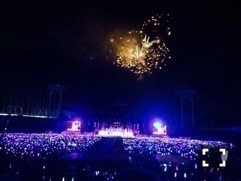

| 2014/09 01 Mon | 火薬くさい。597回目 |
真夏の全国ツアー2014
ツアーファイナル！
明治神宮球場
ありがとうございました。
見事な秋晴れ。
予報は雨だったのに晴れた！
すごいすごい。
3万人を前に踊ったと思うと
まだ鳥肌が立ちます、、
野外の空気を吸いながらの
ステージは最高でした。
浴衣も着たし、MCでは
けっこう懐かしい
きゅんきゅん台詞？言ったけど、
言い終わってどう対処しようか
戸惑ったあたり、やはりああいうのは
向いていなかったと思ったあ←
花道を煽りながら歌ったけど、
たくさんの団扇とタオル。
見えました！
スタンドも見えました！
ありがとう。
やっぱりアンダー曲を
しっかり披露できて嬉しかった！
ここにいる理由は
アンダー曲の中でも特に
力を入れて歌いました。
唯一fullで踊って歌えた曲！
レーザーかっこよかったなあ。
家族も褒めてくれたよ〜！
世界で一番孤独なLover
制服のマネキン
のゾンビダンスの流れは
いつもと違うダンスだったから
楽しかった〜〜
何度目の青空か？
でヘリからいくちゃんが
帰ってきたのは感動した！
途中から歌ったけどやっぱり良い曲！
個人的に思い入れがあるマエストロ...
(詳しくはバレッタMV見てね)
手塚とおるさん、
一緒にライブを盛り上げてくださって
ありがとうございました！

君の名は希望で
花火が上がったのはツアーで
いちばん感動した！
歌いながら
わあああ花火すげええええ
ってなってました。

綺麗。
最後には中継で玲奈さん、
奈々未も最後の最後に来てくれて
みんな揃って本当に良かった！
終わった後奈々未が
アンダー曲良かった
って言ってくれた！わーい
無理しないでね、
早く体力戻してね。
ツアーであんなに
大きな声援をもらって
本当に幸せでした。
野外で歌って踊るって
こんなに楽しいのかあ、
夏の良い思い出になったかな？
来てくださったみなさん
ありがとうございました。
そして、寝ないで頑張って
準備してくださった
たくさんのスタッフのみなさん
ありがとうございました！
設楽さん来てくださいました。
ありがとうございました！
ツアーが始まってから
少しでも変わったって
思ってもらえたかな、
少しでも私のこと
知ってもらえたかな。
アンダーライブ セカンドシーズン
も始まるので更に成長した姿を
みなさんに見せたいと思います。
モバイル会員の方は今日から
応募が始まるよー
よろしくお願いします！
まりか
コメント(632)
2014/09/01 12:18